대기환경산업기사 (2016-05-08 기출문제)
1과목: 대기오염개론
1. 도시지역의 열섬효과의 원인이라 볼 수 없는 것은?
- 도로 포장율이 높기 때문에
- 단위 면적당 연료 소모가 많기 때문에
- 바람에 의한 오염물질의 확산 때문에
- 건물이 많아서 태양열의 흡수가 많기 때문에
(정답률: 87%)

2. 대기오염물질 중 2차 오염물질로만 나열된 것은?
- NO, SO2, HCl
- PAN, NOCl, O3
- PAN, NO, HCl
- O3, H2s, 금속염
(정답률: 88%)
3. 어느 도시지역의 대기오염으로 인하여 주변 시골지역에 비해 태양의 복사열량이 10% 감소한다고 한다. 이 때, 도시지역의 지상온도가 255K이라면 시골지역의 지상온도(K)는? (단, 스테판-볼츠만의 법칙을 이용한다.)
- 약 288
- 약 275
- 약 269
- 약 261
(정답률: 43%)
4. 대기오염과 관련된 설명으로 틀린 것은?
- 환경대기 중 미세먼지는 황산화물과 공존하면 더 큰 피해를 준다.
- 도노라 사건은 포자리카 사건 이후에 발생하였으며 1차 오염물질에 의한 사건이다.
- 카보닐황은 대류권에서 매우 안정하기 때문에 거의 화학반응을 하지 않고 성층권으로 유입된다.
- 멕시코의 포자리카 사건은 황화수소의 누출에 의해 발생한 것이다.
(정답률: 83%)
5. CFCs중 오존 파괴지수가 가장 높은 물질은?
- C2H2F3Cl
- C2H2FCl3
- CH2FBr
- CHFBr2
(정답률: 63%)
6. 아연 광석의 채광이나 제련 과정에서 부산물로 생성되고, 만성중독증상으로 단백뇨와 골연화증을 수반하는 오염물질은?
- 카드뮴
- 납
- 수은
- 석면
(정답률: 77%)
7. 대기오염물질 중 비중이 가장 큰 것은?
- CS2
- CO
- SO2
- NO2
(정답률: 80%)
8. 지구 온난화를 일으키는 온실가스와 가장 거리가 먼 것은?
- CO
- CO2
- CH4
- N2O
(정답률: 68%)
9. 고속도로 상의 교통밀도가 20,000대/hr이고, 차량의 평균속도가 100km/hr이다. 차량 한 대의 탄화수소의 배출량이 0.⑤g/s대 일 때, 고속도로에서 방출되는 탄화수소의 총량(g/s·m)은?
- 10-1
- 10-2
- 10-3
- 10-4
(정답률: 70%)
10. 공업지역의 먼지 농도 측정을 위해 여과지를 이용하여 0.45m/s 속도로 3시간 포집한 결과, 깨끗한 여과지에 비해 포집한 여과지의 빛전달율이 66%였다면 1,000m당 Coh는?
- 3.0
- 3.2
- 3.7
- 3.9
(정답률: 68%)
11. 대기 중 이산화탄소에 대한 설명으로 가장 거리가 먼 것은?
- 고층대기에서 광화학적인 분해반응을 일으키는 경우를 제외하면 대류권내에서는 화학적으로 극히 안정한 편이다.
- 수증기와 함께 지구 온난화에 영향을 미치는 기체이다.
- 전지구적인 배출량은 자연적인 배출량보다 화석연료 연소 등에 의한 인위적인 배출량이 훨씬 많다.
- 미국 하와이 마우나로아에서 측정한 이산화탄소의 계절별 농도는 1년을 주기로 봄·여름에는 감소하는 경향을 나타낸다.
(정답률: 72%)
12. 바람에 관한 설명으로 틀린 것은?
- 전향력은 지구의 자전에 의해 운동하는 물체에 작용하는 힘이다.
- 마찰력의 크기는 지표의 거칠기와 풍속에 비례한다.
- 지균풍은 마찰력, 기압경도력, 전향력에 비해 등압선을 가로지르는 바람이다.
- 해륙풍은 해안지역에서 바다와 육지의 비열차 또는 비열용량차에 의해 발생한다.
(정답률: 84%)
13. 풍하방향에 가까이 있는 건물 높이가 60m 라고 할 때, 다운드래프트 현상을 방지하기 위한 굴뚝의 최소 높이(m)는?
- 60
- 90
- 120
- 150
(정답률: 75%)
14. 런던형 스모그에 관한 설명으로 틀린 것은?
- 주 오염물질은 먼지, SO2다.
- 역전의 종류는 침강성 역전(하강형)이다.
- 시정거리는 100m이하이며 주된 화학반응은 환원반응이다.
- 호흡기 자극, 폐렴 등에 의한 심각한 사망률을 나타내었다.
(정답률: 88%)
15. 환경감률이 –0.1~-0.5℃/100m 범위의 값을 가질 때 대기의 상태는?
- 약한 불안정
- 불안정
- 중립
- 안정
(정답률: 62%)
16. [보기]의 피해현상을 일으키는 대기오염물질은?
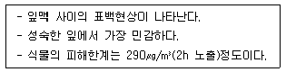
- 오존
- 염소
- 아황산가스
- 이산화질소
(정답률: 63%)
17. 가솔린 자동차의 엔진작동상태에 따라 주로 배출되는 배기가스가 바르게 짝지어진 것은?
- 공전 - NOx
- 정속 – HC
- 가속 – NOx
- 감속 – NOx
(정답률: 81%)
18. 탄화수소가 관여하지 않을 때, 이산화질소의 광화학 반응을 나타낸 것이다. ㉠과 ㉡에 들어갈 물질을 바르게 짝지은 것은?
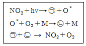
- ㉠ NO3, ㉡ NO
- ㉠ NO, ㉡ NO3
- ㉠ O3, ㉡ NO
- ㉠ NO, ㉡ O3
(정답률: 87%)
19. 대기의 구조에 관한 설명으로 틀린 것은?
- 자외선은 성층권을 통과할수록 서서히 증가하고, 가장 낮은 온도는 성층권 상부에서 나타난다.
- 대류권의 높이는 위도 45도의 경우 평균 12km정도이며, 극지방으로 갈수록 낮아진다.
- 오존층에서는 오존의 생성과 소멸이 계속적으로 일어나면서 오존의 농도를 유지한다.
- 대류권에서는 고도가 높아짐에 따라 단열팽창에 의해 약 6.5℃/km씩 낮아지는 기온감률 때문에 공기의 수직혼합이 일어난다.
(정답률: 65%)
20. 수직 온도 경사가 과단열적이고 난류가 심할 때 일어나며 날씨가 맑아서 태양 복사열이 강한 경우 주로 발생하는 연기의 분산 형태인 것은?
- looping
- conning
- fanning
- trapping
(정답률: 81%)
2과목: 대기오염 공정시험 기준(방법)
21. 굴뚝 배출가스 중의 아황산가스를 연속적으로 자동측정 하는 방법으로 거리가 먼 것은?
- 용액전도율법
- 적외선흡수법
- 불꽃광도법
- 광투과법
(정답률: 58%)
22. 굴뚝 단면이 상·하 동일 단면적인 직사각형 굴뚝의 직경 산출방법으로 옳은 것은? (단, 가로 : 굴뚝내부 단면 가로치수, 세로 : 굴뚝내부 단면 세로치수)
- 환산직경 = {(가로×세로) / (가로+세로)}
- 환산직경 = 2×{(가로×세로) / (가로+세로)}
- 환산직경 = 4×{(가로×세로) / (가로+세로)}
- 환산직경 = 8×{(가로×세로)} / (가로+세로)}
(정답률: 88%)
23. 이온크로마토그래프의 장치 구성 순서 중 써프렛서가 위치할 곳으로 옳은 곳은?
- 분리관과 검출기 사이
- 시료주입장치와 분리관 사이
- 송액펌프와 시료주입장치 사이
- 검출기와 기록계 사이
(정답률: 72%)
24. 굴뚝 배출가스의 유속을 피토우관으로 측정하였을 때 측정조건이 다음과 같았다. 이 배출가스의 평균유속은? (단, 동압 : 1.5mmH2O, 피토우관계수 : 0.8584, 굴뚝 내의 습한 배출가스 밀도 : 0.9kg/m3, 기타 조건은 동일함)
- 약 2.9 m/s
- 약 3.2 m/s
- 약 4.5 m/s
- 약 4.9m/s
(정답률: 55%)
25. 배출가스 중 비소화합물 측정방법 중 자외선/가시선 분광법에 관한 설명으로 옳지 않은 것은?
- 정량범위는 0.007ppm~0.01ppm (건조시료가스량 1m3인 경우)이고, 정밀도는 10% 이하이다.
- 황화수소가 영향을 줄 수 있으며 이는 아세트산납으로 제거할 수 있다.
- pH 5~6에서 메틸 비소화합물에 의해 생성된 메틸수소화비소(methylarsine) 착물은 스티빈을 첨가하여 영향을 줄일 수 있다.
- 일부 금속(크롬, 코발트, 구리, 수은, 몰리브데넘, 니켈, 백금, 은, 셀렌 등)이 수소화비소(AsH3) 생성에 영향을 줄 수 있지만 시료 용액 중의 이들 농도는 간섭을 일으킬 정도로 높지는 않다.
(정답률: 69%)
26. 다음 내용 중 ( )에 알맞은 것은? (단, 고용량 공기시료채취기법 사용)
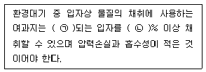
- ㉠ 0.5㎛, ㉡99
- ㉠ 0.5㎛, ㉡95
- ㉠ 0.3㎛, ㉡99
- ㉠ 0.3㎛, ㉡95
(정답률: 70%)
27. 염산(1+2)라고 되어 있을 때 실제 조제할 경우 어떻게 하는가?
- 염산 1mL에 물 1mL를 혼합한다.
- 물 1g에 염산 2g을 혼합한다.
- 염산 1mL에 물 2mL를 혼합한다.
- 물 1mL에 염산 2mL를 혼합한다.
(정답률: 82%)
28. 배출가스 중 황산화물을 중화적정법으로 측정한 결과가 다음과 같다. 황산화물의 농도는?
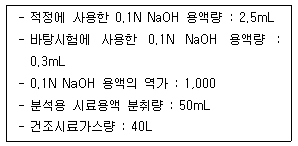
- 308ppm
- 320ppm
- 350ppm
- 520ppm
(정답률: 49%)
29. 굴뚝 등에서 배출되는 배출가스 중의 암모니아를 분석하는 방법에서 중화적정법으로 분석하기에 가장 적합한 경우는?
- 시료채취량 40L인 경우 시료 중의 암모니아의 농도가 약 10ppm 미만인 것
- 시료채취량 40L인 경우 시료 중의 암모니아의 농도가 약 100ppm 이상인 것
- 시료채취량 20L인 경우 시료 중의 암모니아의 농도가 약 10ppm 미만인 것
- 시료채취량 20L인 경우 시료 중의 암모니아의 농도가 약 100ppm 미만인 것
(정답률: 57%)
30. 배출가스 중 포름알데히드 및 알데히드류를 측정하기 위해 적용되는 분석방법이 아닌 것은?
- 피리딘피라졸론법
- 고성능액체크로마토그래프법
- 크로모트로핀산 자외선/가시선분광법
- 아세틸아세톤 자외선/가시선분광법
(정답률: 62%)
31. 배출가스 중 굴뚝 배출 시료 채취 시 안전을 위하여 필요한 조치가 아닌 것은?
- 채취에 종사하는 사람은 보통 2인 이상을 1조로 한다.
- 굴뚝 배출가스의 조성, 온도 및 압력과 작업환경 등을 잘 알아둔다.
- 옥외에서 작업하는 경우에는 바람의 방향을 확인하여 바람이 부는 반대쪽에서 작업하는 것이 좋다.
- 작업환경이 고온인 경우에는 드라이아이스 자켓 등을 입는다.
(정답률: 84%)
32. 굴뚝 배출가스 중 염화수소를 분석하기 위해 사용되는 시료채취관의 재질과 흡수액이 옳게 연결된 것은?
- 경질유리 – 붕산 용액
- 석영 – 수산화소듐 용액
- 보통강철 – 과산화수소수 용액
- 스테인리스강 – 다이에틸아민동 용액
(정답률: 70%)
33. 자외선/가시선 분광법에서 램버어트 비어(Lambert-Beer) 법칙에 의한 흡광도 A를 구하는 식으로 옳은 것은? (단, 입사광의 강도는 Io, 투사광의 강도는 It)
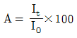
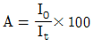
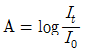
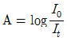
(정답률: 74%)
34. 대기오염공정시험기준상 화학분석 일반사항에서 규정한 시험의 기재 및 용어의 의미로 옳지 않은 것은?
- “정확히 단다”라 함은 규정한 량의 검체를 취하여 분석용 저울로 0.1mg까지 다는 것을 뜻한다.
- “항량이 될 때까지 건조한다 또는 강열한다”라 함은 따로 규정이 없는 한 보통의 건조방법으로 1시간 더 건조 또는 강열할 때 전후 무게의 차가 매 g당 0.3mg 이하일 때를 뜻한다.
- 시험 조작 중 “즉시”란 10초 이내에 표시된 조작을 하는 것을 뜻한다.
- 시료의 시험, 바탕시험 및 표준액에 대한 시험을 일련의 동일시험으로 행할 때 사용하는 시약 또는 시액은 동일 롯트(Lot)로 조제된 것을 사용한다.
(정답률: 85%)
35. 환경대기 시료채취방법에서 시료 채취 지점수 및 채취 장소의 결정 방법과 가장 거리가 먼 것은?
- 인구비례에 의한 방법
- TM 좌표에 의한 방법(Grid System)
- 중심점에 의한 동심원을 이용하는 방법
- 대상지역 채취점 배열표에서 구하는 방법
(정답률: 59%)
36. 다음은 링겔만 매연농도법에 관한 설명이다. ( )안에 알맞은 것은?
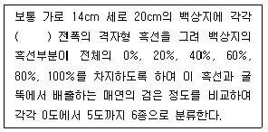
- 0, 2, 4, 6, 8 mm
- 0, 1.0, 2.3, 3.7, 5.5 mm
- 0, 1.5, 3.2, 6.8, 8.6 mm
- 0, 1.8, 3.6, 5.4, 7.2 mm
(정답률: 84%)
37. 기체크로마토그래피법에 사용되는 검출기 중 탄화수소를 분석하는데 가장 적합한 것은?
- 수소염이온검출기(FID)
- 불꽃광도검출기(FPD)
- 열전도도검출기(TCD)
- 전자포획형검출기(ECD)
(정답률: 71%)
38. 굴뚝 배출가스 중 질소산화물의 분석방법에서 자외선/가시선분광법 페놀디설폰산법에서의흡수액으로 옳은 것은?
- 황산 + 과산화수소 + 증류수
- 크로모트로핀산 + 황산
- 페놀디술폰산용액
- 나프틸에틸렌디아민용액
(정답률: 83%)
39. 굴뚝 배출가스 중의 먼지 측정 시 수동식 채취기에 의한 방법에서 흡입가스 유량의 측정을 위하여 원칙적으로 사용하는 유량계는?
- 적산유량계
- 벤츄리 유량계
- L자형 피토우관
- 오리피스 유량계
(정답률: 60%)
40. 굴뚝 배출가스 중 수은화합물의 주 시험방법은?
- 흡광광도법
- 이온전극법
- 가스크로마토그래프법
- 냉증기-원자흡수분광광도법
(정답률: 76%)
3과목: 대기오염방지기술
41. 전기집진장치에서 2차 전류가 주기적으로 변하거나 불규칙적으로 흐르는 장애현상이 발생할 때의 대책으로 가장 거리가 먼 것은?
- 조습용 스프레이의 수량을 늘린다.
- 분진을 충분하게 탈리시킨다.
- 방전극과 집진극을 점검한다.
- 1차 전압을 스파크와 전류의 흐름이 안정될 때까지 낮추어 준다.
(정답률: 76%)
42. 검댕의 발생에 대한 설명으로 틀린 것은?
- 연료중 C/H 비가 클수록 검댕의 발생이 많다.
- 중유를 연소시킬 때 연소실 열 발생율 이상으로 중유를 주입하면 검댕이 발생한다.
- 공기비를 크게 하여 완전 연소시키면 검댕이 많이 발생한다.
- 석탄 중에 휘발분이 많고 점성이 클수록 검댕이 많이 발생한다.
(정답률: 67%)
43. 연료의 착화온도에 관한 설명이 틀린 것은?
- 분자구조가 복잡할수록 낮아진다.
- 활성화에너지가 클수록 낮아진다.
- 발열량이 높을수록 낮아진다.
- 화학결합의 활성도가 클수록 낮아진다.
(정답률: 54%)
44. 프로판 2 Sm3를 공기비 1.1로 완전연소 시켰을 때, 건조 연소가스량은?
- 약 42 Sm3
- 약 48 Sm3
- 약 54 Sm3
- 약 60 Sm3
(정답률: 58%)
45. 원소구성비(무게)가 C=75%, O=9%, H=13%, S=3%인 석탄 1kg을 완전연소 시킬 때 필요한 이론산소량은?
- 1.94kg
- 2.09kg
- 2.66kg
- 2.98kg
(정답률: 41%)
46. 연소 시 질소산화물(NOx)의 발생을 감소시키는 방법으로 틀린 것은?
- 2단 연소
- 연소부분 냉각
- 배기가스 재순환
- 높은 과잉공기사용
(정답률: 83%)
47. 먼지에 관한 설명으로 틀린 것은?
- 입경이 작을수록 비표면적이 작다.
- 진밀도가 작을수록 침강속도가 느리다.
- 입경이 클수록 동종입자 간에 부착력이 작아진다.
- 입경 10㎛ 이하의 부유입자는 대기 중에 비교적 장시간 체류한다.
(정답률: 73%)
48. 과잉공기가 클 때 나타나는 현상으로 틀린 것은?
- 연소실 내 온도 저하
- 배출가스 중 NOx량 증가
- 배출가스에 의한 열손실의 증가
- 배출가스의 온도가 높아지고 매연이 증가
(정답률: 63%)
49. 싸이클론의 특징으로 가장 거리가 먼 것은?
- 먼지량이 많아도 처리가 가능하다.
- 미세입자에 대한 집진효율이 낮다.
- 설치비와 유지비가 많이 요구되지 않는 편이다.
- 압력손실(10~30mmH2O)이 낮아 동력소비량이 적은 편이다.
(정답률: 62%)
50. 여과집진장치에서 여재(filter)를 선정할 때 고려할 사항이 아닌 것은?
- 가격
- 전기저항
- 기계적 강도
- 처리가스 온도
(정답률: 70%)
51. 기체 분산형 흡수장치는?
- 단탑(plate tower)
- 충전탑(packed tower)
- 분무탑(spray tower)
- 벤츄리 스크러버(venturi scrubber)
(정답률: 75%)
52. 관성력 집진장치에서 집진율을 높이는 방법으로 틀린 것은?
- 충돌식의 경우 장치 출구의 가스속도가 클수록 집진율이 높아진다.
- 충돌식의 경우 충돌 직전의 각속도가 클수록 집진율이 높아진다.
- 반전식의 경우 방향전환을 하는 곡률반경이 작을수록 집진율이 높아진다.
- 함진가스의 방향 전환횟수는 많을수록 압력손실은 커지고, 집진율은 높아진다.
(정답률: 60%)
53. 메탄올 5kg을 완전연소하려고 할 때 필요한 실제공기량은? (단, 과잉공기계수 m=1.3)
- 22.5 Sm3
- 25.0 Sm3
- 32.5 Sm3
- 37.5 Sm3
(정답률: 45%)
54. 다음의 액체연료의 연소방식에 관한 설명이다. ( )에 알맞은 것은?
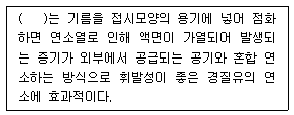
- 포트식 연소
- 증기 분무식 연소
- 부분 예혼합 연소
- 이류체 분무화식 연소
(정답률: 72%)
55. 분진입자와 유해가스를 동시에 제거할 수 있는 집진장치는?
- 여과집진장치
- 중력집진장치
- 전기집진장치
- 세정집진장치
(정답률: 85%)
56. 원형 덕트에서 길이 L, 마찰계수 f, 직경 D, 유속 v일 때 압력손실(Hf)의 비례관계 표현으로 옳은 것은? (단, g : 중력가속도)
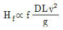
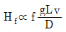
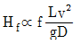
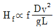
(정답률: 74%)
57. 입경이 50㎛인 입자의 비표면적(표면적/부피)은? (단, 구형입자 기준)
- 1200 cm-1
- 900 cm-1
- 600 cm-1
- 300 cm-1
(정답률: 51%)
58. 집진기 입구와 출구의 기체 분진농도가 각각 10g/Sm3, 0.5g/Sm3 일 때, 집진기의 효율은?
- 85%
- 90%
- 95%
- 99%
(정답률: 76%)
59. 전기집진장치에서 먼지의 비저항이 비정상적으로 높은 경우 투입하는 물질과 거리가 먼 것은?
- NaCl
- NH3
- H2SO4
- Soda lime
(정답률: 58%)
60. 다음 중 연료비(고정탄소/휘발분)가 가장 높은 석탄은?
- 무연탄
- 갈색갈탄
- 흑색갈탄
- 고도역청탄
(정답률: 79%)
4과목: 대기환경 관계 법규
61. 대기환경보전법규상 환경기술인의 교육기준으로 옳지 않은 것은?
- 보수교육은 신규교육을 받은 날을 기준으로 3년마다 1회 받는다.
- 정보통신매체를 이용하여 원격교육을 하는 경우를 제외한 환경기술인의 교육기간은 5일 이내로 한다.
- 교육 대상자가 그 교육을 받아야 하는 기한의 마지막 날 이전 2년 이내에 동일한 교육을 받았을 경우에는 해당 교육을 받은 것으로 본다.
- 환경기술인은 환경보전협회, 환경부장관 또는 시·도지사가 교육을 실시할 능력이 있다고 인정하여 위탁하는 기관에서 실시하는 교육을 정기적으로 받아야 한다.
(정답률: 80%)
62. 환경정책기본법령상 오존(O3)의 대기환경기준으로 옳은 것은? (단, 1시간 평균치)
- 0.03ppm 이하
- 0.⑤ppm 이하
- 0.1ppm 이하
- 0.15ppm 이하
(정답률: 67%)
63. 다중이용시설 등의 실내공기질관리법에 있어 신축 공동주택의 실내공기질 측정항목과 가장 거리가 먼 것은?
- 벤젠
- 자일렌
- 메틸벤젠
- 폼알데하이드
(정답률: 70%)
64. 수도권대기환경청장, 국립환경과학원장 또는 한국환경공단이 설치하는 대기오염측정망의 종류와 가장 거리가 먼 것은?
- 국가배경농도 측정망
- 유해대기물질 측정망
- 산성강하물 측정망
- 대기중금속 측정망
(정답률: 75%)
65. 대기환경보전법령상 사업자 과실로 확정배출량을 잘못 산정하여 제출 후 부과금 납부명령을 받은 사업자가 부과금 조정을 신청할 경우 부과금납부통지서를 받은 날부터 얼마 이내에 조정신청 하여야 하는가?
- 7일 이내에 하여야 한다.
- 15일 이내에 하여야 한다.
- 30일 이내에 하여야 한다.
- 60일 이내에 하여야 한다.
(정답률: 58%)
66. 대기환경보전법상 용어의 정의로 옳지 않은 것은?
- “매연”이란 연소할 때에 생기는 유기탄소가 주가 되는 미세한 입자상물질을 말한다.
- “휘발성유기화합물”이란 탄화수소류 중 석유화학제품, 유기용제, 그 밖의 물질로서 환경부장관이 관계 중앙행정기관의 장과 협의하여 고시하는 것을 말한다.
- “첨가제”란 자동차의 성능을 향상시키거나 배출가스를 줄이기 위하여 자동차의 연료에 첨가하는 탄소와 수소만으로 구성된 화학물질을 말한다.
- “저공해엔진”이란 자동차에서 배출되는 대기오염물질을 줄이기 위한 엔진(엔진개조에 사용하는 부품을 포함한다)으로서 환경부령으로 정하는 배출허용기준에 맞는 엔진을 말한다.
(정답률: 67%)
67. 국가 및 지방자치단체가 환경에 관계되는 법령을 제정 또는 개정하거나 행정계획의 수립 또는 사업의 집행을 할 때에 환경기준이 적절히 유지되기 위해서 고려해야할 사항으로 옳지 않은 것은?
- 환경 악화의 예방
- 환경오염지역의 원상회복
- 환경기술인의 양성 및 배치 계획
- 새로운 과학기술의 사용으로 인한 환경훼손 예방
(정답률: 71%)
68. 대기환경보전법규상 첨가제·촉매제 제조기준에 맞는 제품의 표시크기에 대한 설명으로 옳은 것은?
- 첨가제 또는 촉매제 용기 앞면의 제품명 위에 제품명 글자크기의 100분의 15이상에 해당하는 크기로 표시하여야 한다.
- 첨가제 또는 촉매제 용기 앞면의 제품명 위에 제품명 글자크기의 100분의 30이상에 해당하는 크기로 표시하여야 한다.
- 첨가제 또는 촉매제 용기 앞면의 제품명 밑에 제품명 글자크기의 100분의 15이상에 해당하는 크기로 표시하여야 한다.
- 첨가제 또는 촉매제 용기 앞면의 제품명 밑에 제품명 글자크기의 100분의 30이상에 해당하는 크기로 표시하여야 한다.
(정답률: 67%)
69. 대기오염경보단계 중 경보가 발령되었을 때의 조치사항과 가장 거리가 먼 것은?
- 자동차 사용의 제한
- 주민의 실외활동 제한요청
- 사업장의 조업시간 단축명령
- 사업자의 연료사용량 감축권고
(정답률: 65%)
70. 대기환경보전법규상 개선명령의 이행보고 등과 관련된 대기오염도 검사기관이 아닌 것은?
- 환경보전협회
- 국립환경과학원
- 특별시·광역시·도·특별자치도의 보건환경연구원
- 유역환경청·지방환경청 또는 수도권대기환경청
(정답률: 85%)
71. 대기환경보전법상 자가측정 항목이 아닌 것은?
- 먼지
- 비산먼지
- 황산화물
- 질소산화물
(정답률: 71%)
72. 대기환경보전법상 황사피해방지 종합대책 수립 시 반드시 포함되어야 하는 사항으로 가장거리가 먼 것은? (단, 그 밖의 사항 등은 제외한다.)
- 종합대책 추진실적 및 그 평가
- 황사 발생 감소를 위한 국제협력
- 황사피해 방지를 위한 국내대책
- 대기오염물질과 온실가스를 연계한 통합대기환경 관리체계의 구축
(정답률: 60%)
73. 대기환경관계법규상 특정대기유해물질이 아닌 것은?
- 벤지딘
- 메틸벤젠
- 포름알데히드
- 트리클로로에틸렌
(정답률: 56%)
74. 대기환경보전법령상 배출허용기준 초과와 관련한 “초과부과금” 부과대상 오염물질에 해당하지 않는 것은?
- 먼지
- 염화수소
- 암모니아
- 포름알데히드
(정답률: 63%)
75. 대기환경관계법상 저공해자동차로의 전환 또는 개조 명령, 배출가스저감장치의 부착·교체 명령 또는 배출가스저감장치의 부착·교체 명령 또는 배출가스 관련 부품의 교체명령, 저공해엔진으로의 개조 또는 교체명령을 이행하지 아니한 자에 대한 벌칙기준은?
- 200만원 이하의 과태료
- 300만원 이하의 과태료
- 1년 이하의 징역이나 500만원 이하의 벌금
- 1년 이하의 징역이나 1천만원 이하의 벌금
(정답률: 71%)
76. 비산먼지 발생사업 신고 후 변경신고를 하여야 하는 경우로 옳지 않은 것은?
- 사업장의 명칭 또는 대표자를 변경하는 경우
- 비산먼지 배출공정을 변경하는 경우
- 건설공사의 공사기간을 연장하는 경우
- 공사중지를 한 경우
(정답률: 77%)
77. 대기환경보전법규상 위임업무 보고사항 중 자동차연료 제조기준 적합여부 검사현황의 보고 횟수 기준으로 옳은 것은?
- 수시
- 연 1회
- 연 2회
- 연 4회
(정답률: 50%)
78. 대기환경보전법규상 대기오염물질발생량의 합계가 연간 35톤인 경우 사업장 분류기준으로 몇 종 사업장에 해당하는가?
- 1종 사업장
- 2종 사업장
- 3종 사업장
- 4종 사업장
(정답률: 81%)
79. 자동차 연료형 첨가제의 종류가 아닌 것은?
- 세척제
- 매연 분산제
- 유동성 향상제
- 세탄가 향상제
(정답률: 58%)
80. 환경부장관이 총량규제를 하고자 할 때 고시할 사항과 거리가 먼 것은?
- 총량규제구역
- 총량규제 대기오염물질
- 대기오염물질 저감계획
- 총량규제 대기오염물질의 배출원
(정답률: 54%)